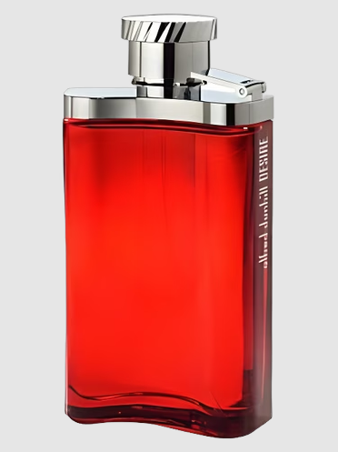

Dunhill Desire is a luxurious fragrance by Dunhill, introduced in 2010. It features a blend of bergamot, black pepper, and cardamom as top notes, followed by orange blossom, jasmine, and sandalwood in the heart, and vetiver, musk, and patchouli in the base. This fragrance is known for its fresh, fruity, and sensual scent that evokes the essence of a passionate encounter, making it a popular choice for both men and women. The iconic bottle, designed by Pierre Bourdon, symbolizes the fragrance's aquatic theme and has become synonymous with freshness and masculinity.